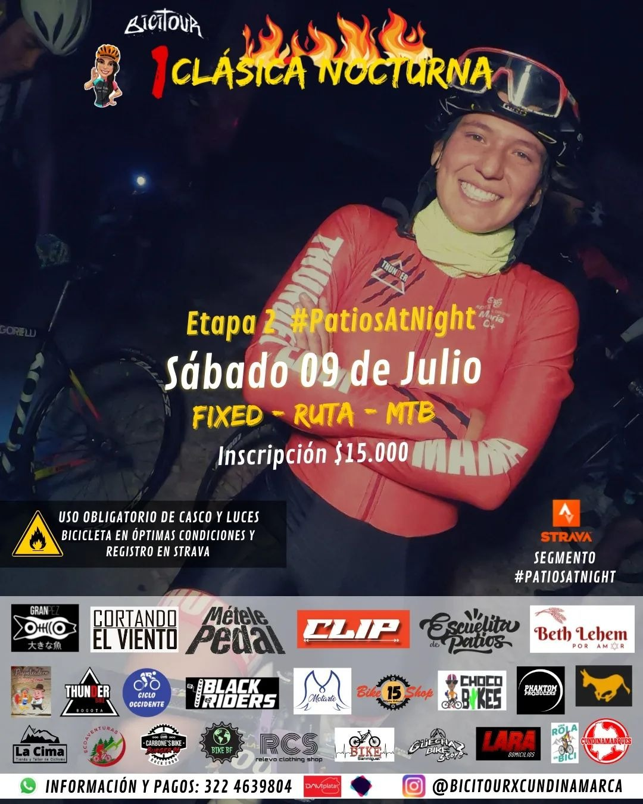

Eventos activos

🚲Sacro Piques va dirigida no solo a la comunidad fixera sino a todas las personas que quieran apoyar, aportar y participar para la recuperación fÃsica de nuestra corredora Stefania Puentes 🚴🏼‍♀️. Es un formato de explosividad🔥, son 100mts en los que entregarás todo para llevarte uno de los 3️⃣ primeros puestos en cargo, fija y ruta. Si quieres apoyar con tu marca escrÃbenos 💬y se parte de la bolsa de premios ❤️ Este viernes 21 de junio nos vemos en la 📍Biblioteca Virgilio Barco.